Fine-grained action categories based on BWF standards
Expert annotation by badminton coaches
Comprehensive metadata including player and shuttle tracking
Data Collection Workflow
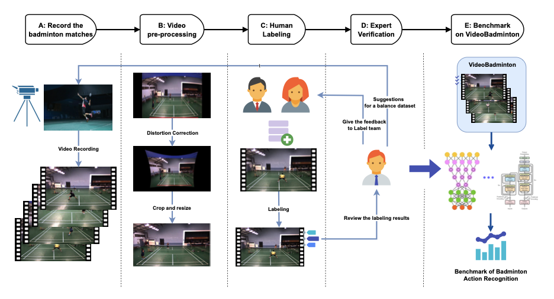
Data Collection Process
Participants
19 skilled players from university team
15 male, 4 female athletes
Near-professional skill level
Wide range of playing styles
Recording Setup
Camera: DFK 37AUX273
Resolution: 1280 x 960
Frame rate: 60 fps
Format: XRGB
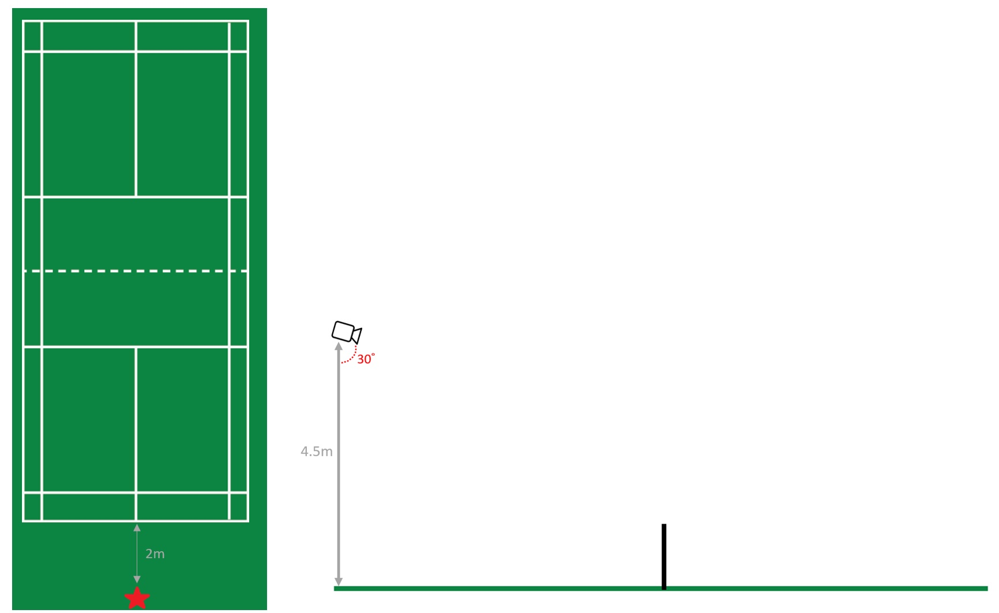
Camera positioned 2m behind baseline, 4.5m height, 30° angle
Data Preprocessing: Distortion Correction
Wide-angle lens causes distortion that must be corrected for accurate analysis
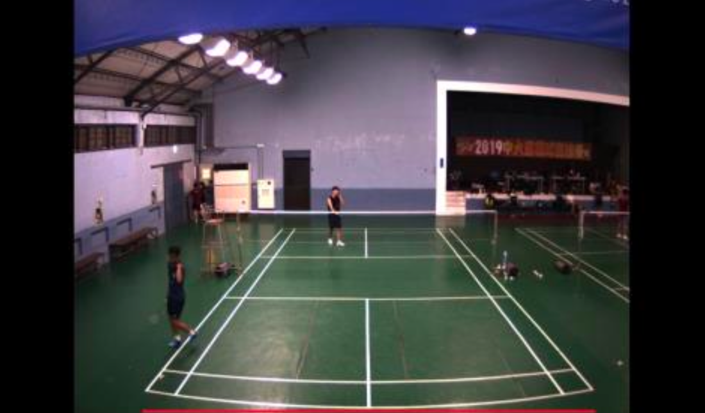
Before: Curved court lines
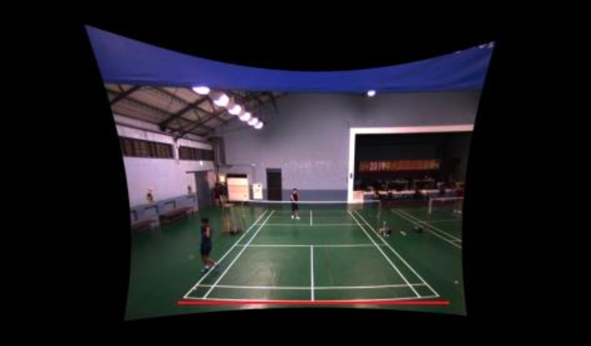
After: Straight court lines
Process: OpenCV calibration using chessboard patterns → Calculate distortion parameters → Apply correction → Crop and resize
Expert Annotation Process
Annotation Team
5 trained annotators
Including university team member
Badminton club members
Quality Control
Head coach review
Discrepancy resolution
Multiple validation passes
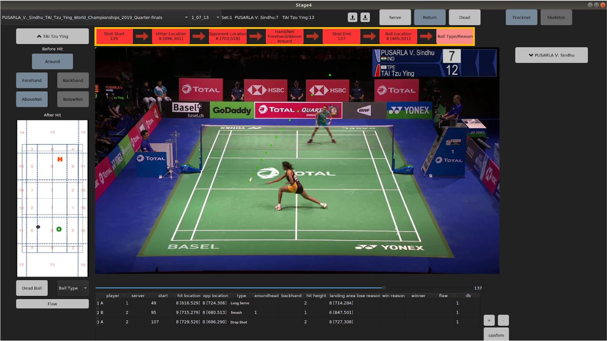
Shot-by-Shot (S²) Labeling Tool interface
18 Badminton Action Classes
Serves:
Short Serve
Long Serve
Attacking Shots:
Smash
Tap Smash
Rush Shot
Drop Shot
Cut
Defensive Shots:
Block
Lift
Defensive Clear
Defensive Drive
Clear
Placement Shots:
Cross-Court Flight
Push Shot
Transitional Slice
Flat Shot
Rear Court Flat Drive
Short Flat Shot
All classes follow Badminton World Federation (BWF) standards
Sample Video Frames
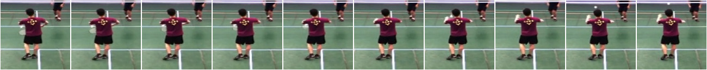
Short Serve
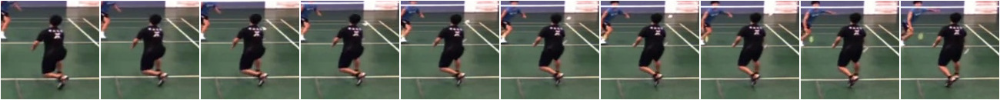
Long Serve
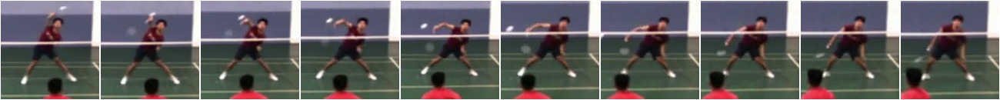
Tap Smash
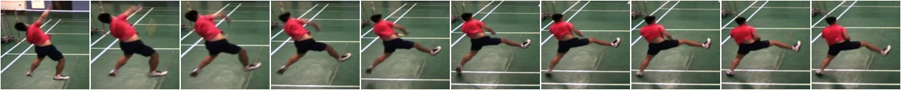
Smash
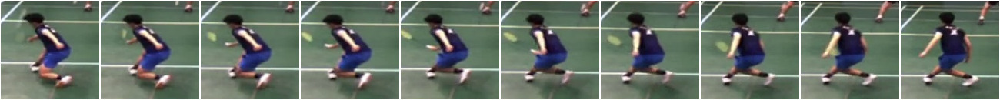
Lift
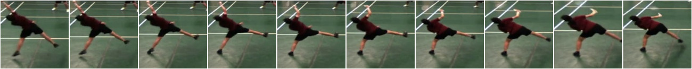
Clear
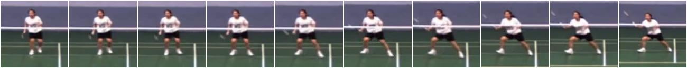
Block
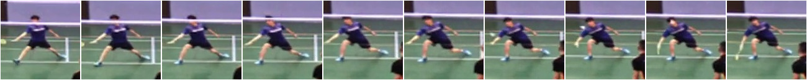
Cross-Court
Dataset Statistics
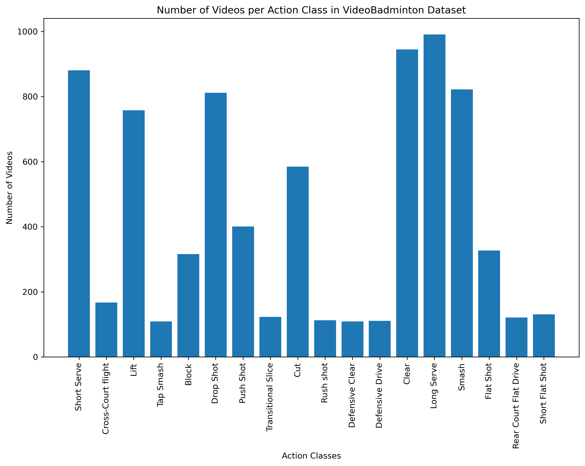
Distribution of video clips across 18 action classes
Dataset Analysis
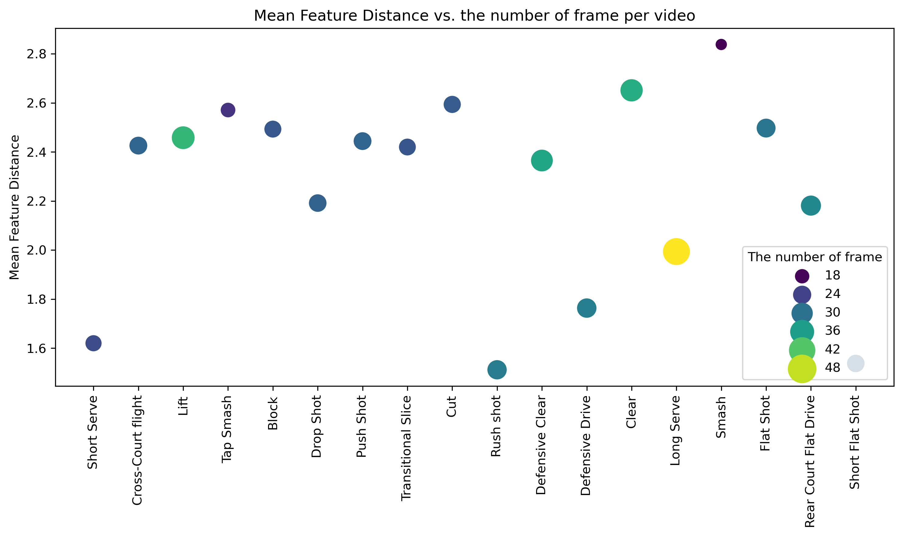
Mean Feature Distance by Class Measures frame-to-frame variation
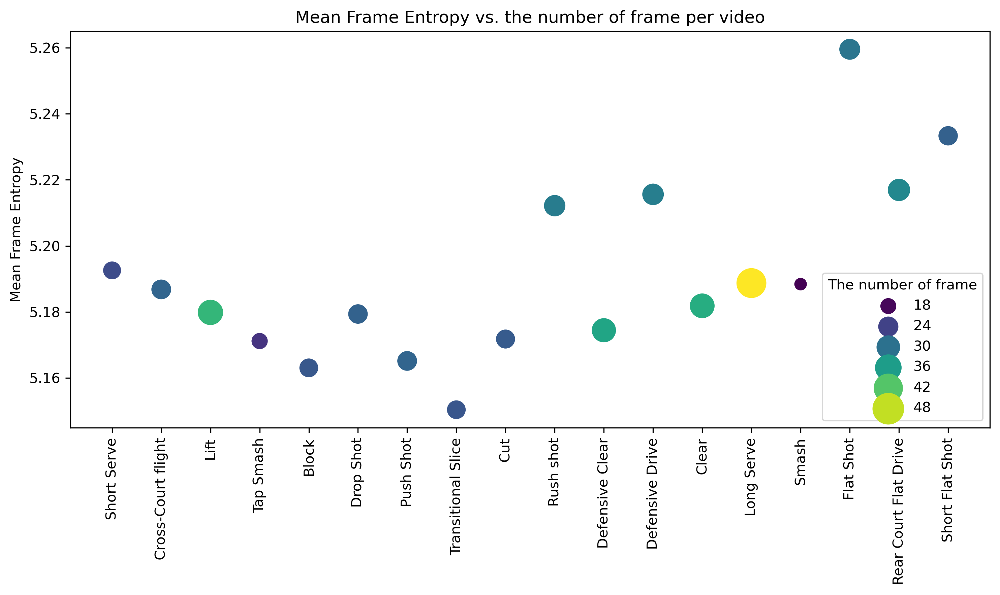
Mean Frame Entropy by Class Measures visual complexity
Insight: Different actions show distinct patterns in temporal dynamics (feature distance) and visual complexity (entropy), validating our fine-grained classification scheme.
Benchmark Results on Full Dataset
Method
Type
Top-1 Acc
Top-5 Acc
Mean Cls Acc
R(2+1)D
Video
79.53%
96.11%
66.97%
SlowFast
Video
82.80%
97.54%
73.80%
TimeSformer
Video
73.18%
94.78%
57.70%
Swin
Video
81.99%
96.52%
69.93%
MViT-V2
Video
14.23%
62.23%
10.76%
ST-GCN
Skeleton
74.41%
93.76%
61.44%
PoseC3D
Skeleton
80.76%
96.01%
67.18%
Key Findings: SlowFast achieves best results; skeleton-based methods competitive; MViT-V2 struggles with domain adaptation.
Part 3
Badminton-CLIP
Multimodal Learning for Sports Action Recognition
CLIP: Contrastive Language-Image Pretraining
Key Innovation
Joint image-text embedding space
Contrastive learning objective
Zero-shot transfer capability
Pre-trained on 400M image-text pairs
Why CLIP for Sports?
Strong visual representations
Semantic understanding via text
Robust to domain shift
Challenge: Image to Video
The Modality Gap: CLIP is trained on static images, but sports actions occur over time in video.
Image Domain
Single frame
Static appearance
No temporal information
Video Domain
Multiple frames
Motion dynamics
Temporal relationships
Our Solution: Adapt CLIP for video through frame-level processing and temporal pooling while leveraging multimodal learning.
Badminton-CLIP Architecture
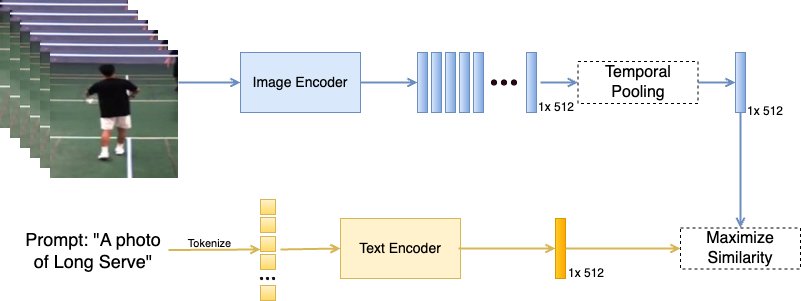
Badminton-CLIP adapts CLIP for video action recognition through temporal pooling
Frame-Level Processing
Given a video V with T frames:
xi = ImageEncoder(fi), ∀ i ∈ {1, ..., T}
Process
Each frame processed independently
Produces frame-level embeddings
Preserves CLIP's visual features
Dimension: T × D
Benefits
Leverages pre-trained CLIP weights
No architecture modification needed
Efficient batch processing
Temporal Pooling
Aggregating frame embeddings into a video-level representation:
v = (1/T) ∑i=1Txi
Key Insight: Average pooling implicitly incorporates temporal information by combining features across multiple frames, establishing inter-frame communication.
The resulting video representation v ∈ ℜD captures both appearance and temporal dynamics.
Prompt Engineering for Sports
Text encoder generates embeddings for action descriptions:
t = TextEncoder("a video of a <action>")
Template Design
"a video of a smash"
"a video of a drop shot"
"a video of a clear"
Why It Works
Provides semantic context
Aligns with CLIP's training
Domain-specific vocabulary
Contrastive Learning Objective
Training objective maximizes similarity between matching video-text pairs:
We explored different strategies for combining frame information:
Fusion Method
Top-1 Accuracy
Top-5 Accuracy
Image-level fusion
58.21%
86.14%
Decision-level fusion
59.42%
87.76%
Embedding-level fusion
60.56%
88.33%
Finding: Embedding-level fusion (our approach) outperforms alternatives by learning temporal relations between frames in the embedding space.
Results: Small Data Performance
Performance on VideoBadminton-10 (10 samples per class)
Method
Top-1 Acc
Top-5 Acc
SlowFast
12.79%
38.08%
TimeSformer
19.45%
54.25%
Swin
19.86%
56.91%
ST-GCN
28.05%
68.58%
PoseC3D
23.03%
59.77%
Badminton-CLIP (Ours)
35.56%
69.44%
Key Result: Badminton-CLIP achieves +7.5% improvement over the next best method with limited training data!
Results: Full Benchmark Comparison
Performance on VideoBadminton-50 (50 samples per class)
Method
Top-1 Acc
Top-5 Acc
SlowFast
12.28%
49.44%
TimeSformer
45.45%
85.16%
Swin
53.53%
87.51%
ST-GCN
60.70%
89.25%
PoseC3D
59.98%
89.87%
Badminton-CLIP (Ours)
60.56%
88.33%
Finding: Badminton-CLIP performs comparably to skeleton-based methods, demonstrating effectiveness of multimodal approach even with more training data.
Key Advantages of Badminton-CLIP
Data Efficiency
Excels with limited training data due to multimodal pretraining
No Pose Extraction
Works directly on RGB frames without skeleton extraction
Semantic Understanding
Text descriptions provide rich action semantics
Transferability
Architecture generalizes to other sports and domains
Part 4
Sitting Posture Analysis
Camera-Based Deep Learning for Healthcare
Healthcare Impact of Lower Back Pain
#1
Cause of disability worldwide
80%
Adults experience LBP in lifetime
$100B+
Annual cost in US alone
Key Factors
Prolonged sitting (office work)
Poor posture habits
Lack of real-time feedback
Limited access to experts
Opportunity: AI-based posture monitoring can provide accessible, continuous feedback.
Traditional vs. AI-Based Methods
Traditional manual posture measurement
Traditional Methods
Require trained experts
Time-consuming
Not scalable
Periodic assessment only
Our AI Approach
Automated detection
Real-time feedback
Accessible to everyone
Continuous monitoring
Our Camera-Based Approach
Camera Input
→
Pose Estimation
→
Posture Classification
→
Feedback
Key Components
MobileNet backbone: Lightweight for real-time processing
Keypoint detection: Ear, shoulder, spine, hip positions
Mobile app for continuous posture monitoring - enabled by MobileNet's efficiency.
Posture Classification Methods
Comparison of three KNN-based methods using different features
Coordinates: Euclidean distance of keypoints
Features: MobileNet intermediate features
OKS: Object Keypoint Similarity (best)
Neck Angle Computation
Computing neck angle from ear and shoulder coordinates:
θ = arctan((y2 - y1) / (x2 - x1))
θdeg = θ × (180 / π)
Where (x1, y1) is ear position and (x2, y2) is shoulder position.
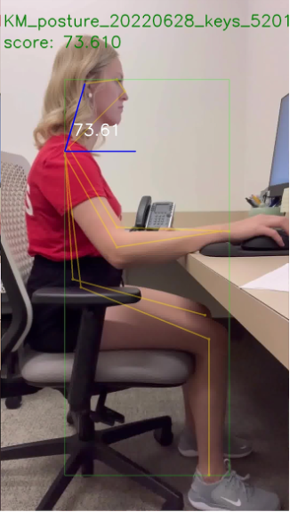
Correct vs. Wrong Posture Detection
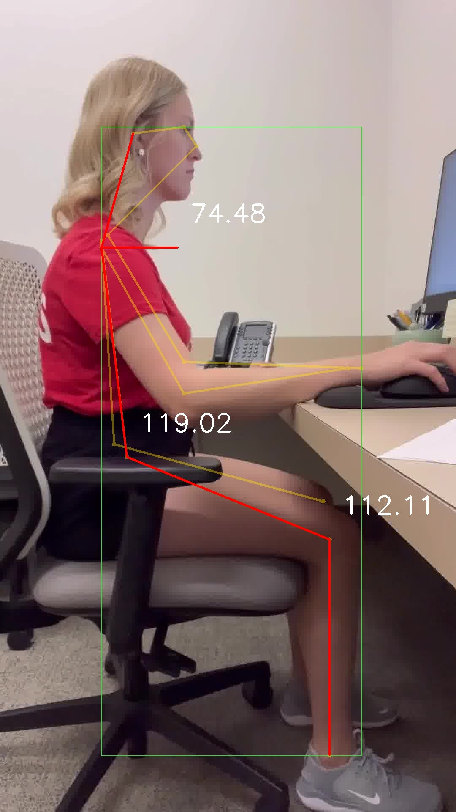
Correct Posture
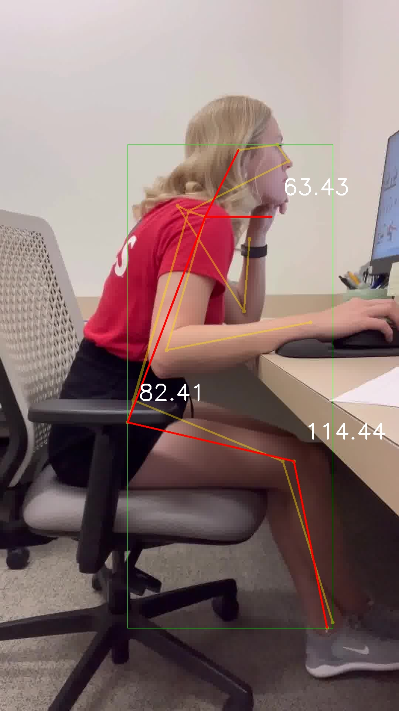
Wrong Posture
System detects forward head posture, slouching, and other common posture problems.
Data Collection Setup
Participants
15 volunteers
45-minute sitting sessions
Controlled posture conditions
Camera Setup
Side camera: 90° angle (lateral view)
Front camera: 45° angle (frontal view)
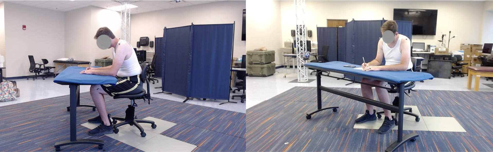
Required sitting posture and camera positions
Vicon Motion Capture Validation
13 Reflective Markers
Ears: 2 markers
Torso: 3 markers (C7, T10, Dorsum)
Shoulders: 2 markers (acromion)
Hips: 2 markers (ASIS)
Knees: 2 markers
Ankles: 2 markers
3D visualization of Vicon marker coordinates
Validation Against Vicon
Key Findings
OKS method provides highest accuracy in posture classification
High correlation with Vicon ground truth measurements
Real-time capable on standard hardware
Threshold of 0.11 optimally balances sensitivity and specificity
Clinical Implications
Accessible posture monitoring without expensive equipment
Continuous feedback for behavior change
Data collection for longitudinal studies
Integration potential with telemedicine
Part 5
Summary & Future Directions
Research Contributions Summary
1. VideoBadminton Dataset
First comprehensive fine-grained badminton action recognition dataset with 7,822 clips across 18 BWF-standard action classes.
2. Badminton-CLIP Model
Novel multimodal approach adapting CLIP for video action recognition, achieving SOTA results on small datasets through temporal pooling and prompt engineering.
3. Camera-Based Posture Analysis
Accessible deep learning method for sitting posture detection, validated against gold-standard Vicon motion capture.
Future Research Directions
Sports Action Recognition
Extend to other sports: Table tennis, baseball, tennis - applying the VideoBadminton workflow
LLM/LVM Integration: Leverage large language and vision models to improve recognition accuracy
AI Agents: Introduce LLM-based agents for automated sports analysis and coaching feedback
Healthcare Applications
Posture Monitoring App: Mobile application for real-time sitting posture correction (ongoing collaboration with Auburn University)
Clinical Validation: Expand studies with healthcare partners
Workplace Wellness: Integration with corporate health programs
Research Vision: Build an AI-powered ecosystem that bridges cutting-edge foundation models (LLMs, Vision-Language Models) with practical applications in sports analytics and preventive healthcare.
Mentoring & Collaborations
Student Mentoring (Fisk University)
Honors Projects: Supervised undergraduate honors research in computer vision and AI
Thesis Projects: Guided senior thesis students on pose estimation applications
Mentored students from idea development to completion
Active Collaborations
Auburn University: Sitting posture app development